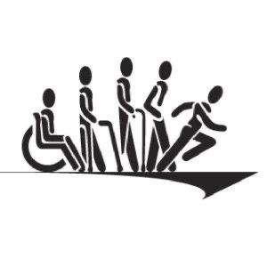

Providing a Community to Cultivate and Grow happiness
At Make A Family, Inc., we help persons with disabilities find happiness in their own homes, in their personal relationships, and as contributing members of their community.

LIVING LIFE WELL
Community Systems presents some of our favorite success stories.
Each represents a triumph over adversity and inspires the staff and families who know them. We all feel very fortunate to have played a supporting role.
A Eight-state family
At Make A Family, Inc., we help persons with disabilities find happiness in their own homes, in their personal relationships, and as contributing members of their community.About MAK
At Make A Family, Inc., Community Systems, Inc. is a four-state family of non-profit, tax exempt corporations whose mission is helping persons with disabilities to find happiness in their own homes, in their personal relationships, and as contributing members of their community.OUR MISSION
Helping persons with disabilities to find happiness in their own homes, in their personal relationships, and as contributing members of their community.
Volunteer
for Social Inclusion
When all people can engage as members of the economy and participate in community events and associations, then our family becomes stronger. Your partnership with MAK ensures that you are building a socially inclusive and welcoming community — guaranteeing that happiness can not only grow here — it can blossom.
Invest
in a Stronger Community
A donation can help fulfill our mission to help persons with disabilities find happiness as a contributing member of their community. As a donor, you not only help us create the conditions to support happiness, you become a change agent for promoting social inclusion. MAK is a 501(c)(3) tax-exempt organization.
Candy Stripers
To Protect Family'
HealthCare Volunteer is a non-profit organization that connects volunteers with a health-related volunteering opportunity.MAK Inc., provides medical, dental, and surgical services to needy patients and impoverished people worldwide, through indirect and direct patient-care programs. The company also provides a social networking application that allows health volunteers to connect with each other and create new volunteer teams.